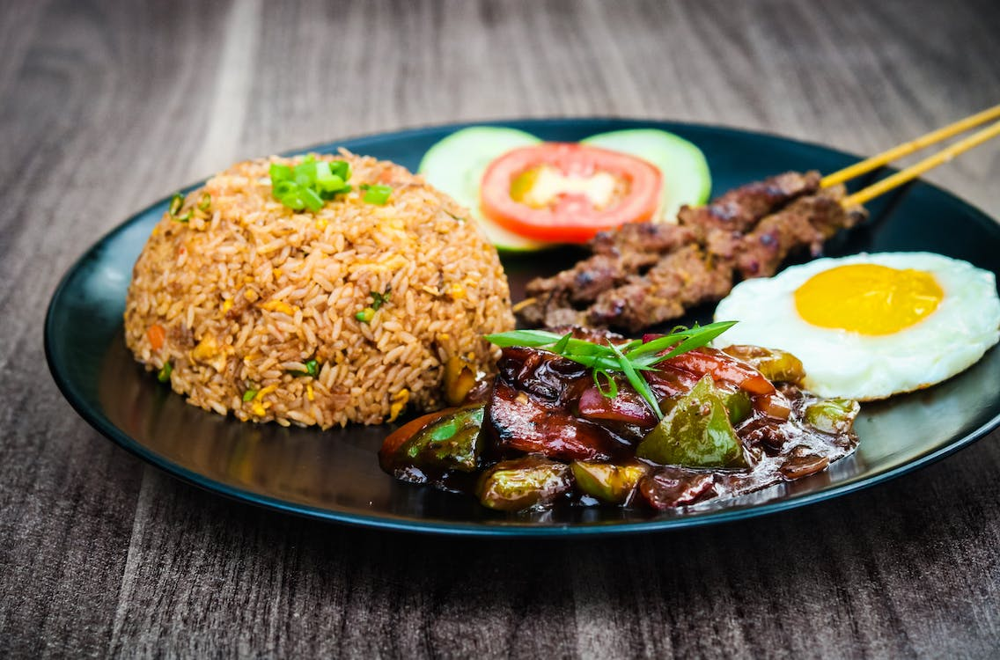
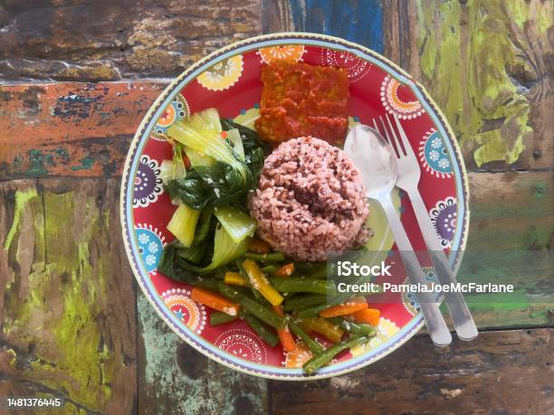
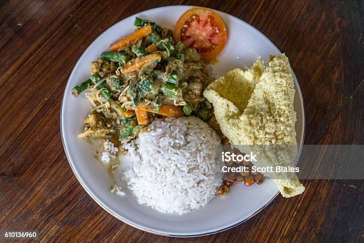
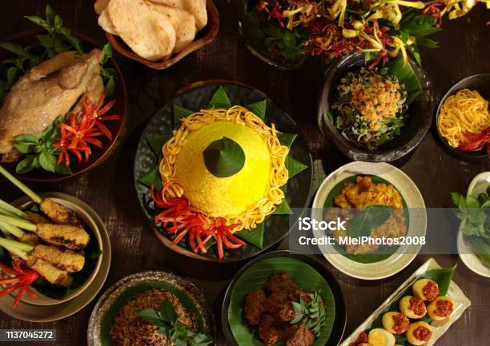
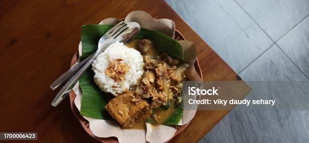
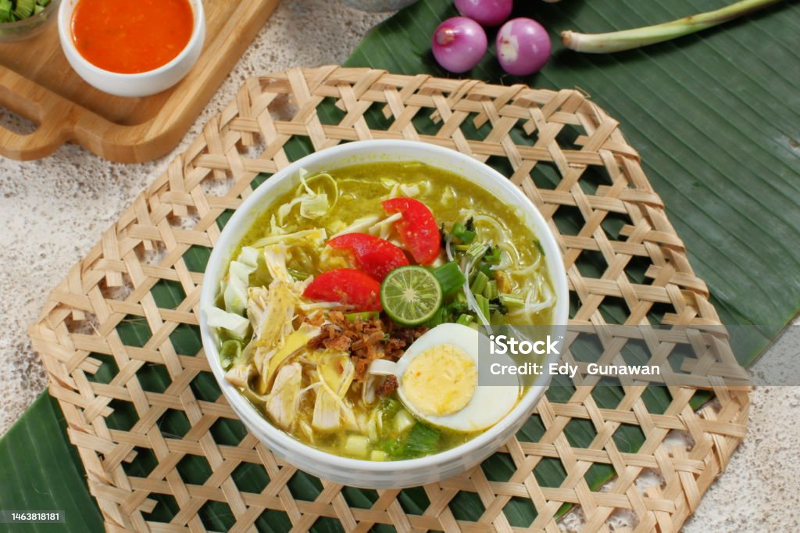

Gallery
Plat
Bienvenue dans notre sélection de plats principaux, une aventure culinaire qui vous emmène au cœur de l'Indonésie. Nos plats principaux reflètent la diversité et la richesse de la cuisine indonésienne, avec des saveurs authentiques qui ont traversé les générations.
Le classique indonésien par excellence. Notre Nasi Goreng est préparé avec un riz frit parfaitement assaisonné, garni de légumes frais, d'œuf brouillé et de votre choix de viande ou de tofu.
Le "Nasi Campur" est un plat indonésien qui signifie littéralement "riz mélangé". Il est populaire en Indonésie et dans d'autres régions d'Asie du Sud-Est, chaque région ayant sa propre variation de ce plat. Le Nasi Campur est une option de repas polyvalente et délicieuse qui se compose généralement d'une portion de riz, de petits morceaux de différentes viandes, de légumes, d'œufs et de condiments variés, le tout présenté sur un seul plateau.
Le "Gado Gado" est une salade indonésienne fraîche et colorée composée de légumes, de tofu, d'œufs durs et de notre célèbre sauce aux cacahuètes. Une harmonie de textures et de saveurs.
Le "Rijsttafel" est un concept culinaire qui trouve ses origines aux Pays-Bas, mais qui est étroitement associé à la cuisine indonésienne. Le terme "Rijsttafel" signifie littéralement "table de riz" en néerlandais, et il désigne une manière particulière de servir et de déguster un assortiment de plats indonésiens variés, généralement accompagnés de riz.(2 personnes uniquement).
Le "Gudeg" est un plat traditionnel de la cuisine indonésienne, originaire de la région de Yogyakarta et de Java central. C'est un plat emblématique de la cuisine javanaise qui est apprécié pour son goût doux, sa texture tendre et sa préparation minutieuse.
Le "Soto" est un type de soupe populaire en Indonésie, et il existe de nombreuses variations régionales de ce plat à travers tout le pays. Le Soto est apprécié pour sa saveur riche et ses ingrédients variés, ce qui en fait un plat de confort bien-aimé en Indonésie.
